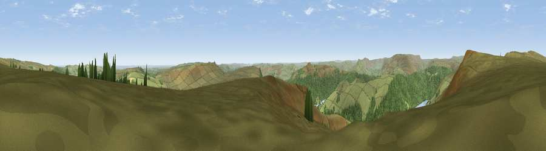

Viewpoint near Thornhill
#6150 in England · top 3% of its area beats it · near ThornhillWhere it is
The exact computed spot (SK 20212 88525). Click the marker for map links.
The view, rendered

A 360° render of this exact spot computed from the terrain model, tree cover and land cover — summer colours, afternoon light, calibrated against photographs of famous viewpoints. Real trees, hedges and buildings will differ in detail.
The panorama
Grey silhouette: terrain skyline in each direction (720 bearings, Earth curvature and refraction included). Dashed green: skyline with trees (+15 m) and buildings (+8 m) as obstacles. Blue strip: how far the ground is visible on each bearing.
Where the view opens
Wedge length = distance to the farthest visible ground on that bearing (vegetation-aware). Rings at 10, 25 and 50 km.
What fills the view
74% grassland · 24% woodland · 2% water ·
Angular shares of the visible panorama (visual magnitude), not map area. Landscape diversity 0.30 (0–1 Shannon).
Key numbers
More beautiful places nearby
The staircase of upgrades: each row has a higher view potential than everything closer. Driving times are estimates from straight-line distance, calibrated against real road routing — check an actual route before setting out.
| Place | Direction | Drive | Score |
|---|---|---|---|
| Viewpoint near Thornhill | SSE · 0 km | ~1 min | 70.4 |
| Viewpoint near Thornhill | NW · 1 km | ~2 min | 74.1 |
| Viewpoint near Wharncliffe Side | NE · 14 km | ~25 min | 75.2 |
| Wild Bank | WNW · 23 km | ~38 min | 76.2 |
| Viewpoint near Carrbrook | WNW · 24 km | ~39 min | 77.1 |
| Viewpoint near Mow Cop | SW · 46 km | ~66 min | 78.9 |
| Viewpoint near Mow Cop | SW · 46 km | ~67 min | 80.2 |
| White Brow | WNW · 59 km | ~81 min | 82.9 |
53.39318, -1.69752 · source: screening · position refined by local search. Computed location — check access rights before visiting.